<!doctype html>
<html>
<head>
<meta charset="utf-8">
<title>Neah Bay 7.22-11</title>
<meta name="generator" content="WYSIWYG Web Builder - http://www.wysiwygwebbuilder.com">
<link href="Emerald_Diving.css" rel="stylesheet">
<link href="Neah_Bay_7.22.11.css" rel="stylesheet">
<script>
function onChangeGoMenu1(){var a=document.getElementById('GoMenu1-select'),b=a.options[a.selectedIndex].value,c=a.options[a.selectedIndex].className;a.selectedIndex=0;a.blur();b&&(NewWin=window.open(b,c),window.NewWin.focus())};
</script>
</head>
<body>
<script>
var gaJsHost = (("https:" == document.location.protocol) ? "https://ssl." : "http://www.");
document.write(unescape("%3Cscript src='" + gaJsHost + "google-analytics.com/ga.js' type='text/javascript'%3E%3C/script%3E"));
</script>
<script>
try {
var pageTracker = _gat._getTracker("UA-15987748-1");
pageTracker._trackPageview();
} catch(err) {}</script>

<div id="container">
<div id="wb_Shape2" style="position:absolute;left:0px;top:0px;width:1050px;height:6448px;z-index:19;">
</div>
<div id="wb_Shape1" style="position:absolute;left:183px;top:89px;width:850px;height:6337px;z-index:20;">
</div>
<div id="wb_Text1" style="position:absolute;left:294px;top:2610px;width:155px;height:46px;text-align:justify;z-index:21;">
<span style="color:#C0C0C0;font-family:Arial;font-size:13px;"><br><br></span></div>
<div id="wb_MasterPage1" style="position:absolute;left:0px;top:0px;width:1006px;height:2656px;z-index:22;">
<div id="wb_Text5" style="position:absolute;left:293px;top:2610px;width:155px;height:46px;text-align:justify;z-index:13;">
<span style="color:#C0C0C0;font-family:Arial;font-size:13px;"><br><br></span></div>
<div id="wb_Text3" style="position:absolute;left:229px;top:4px;width:657px;height:60px;z-index:14;">
<span style="color:#005500;font-family:Impact;font-size:48px;">Dive Reports</span></div>
<div id="wb_GoMenu1" style="position:absolute;left:729px;top:26px;width:277px;height:25px;z-index:15;">
<form id="GoMenu1" role="menu">
<select id="GoMenu1-select" name="GoMenu1" onchange="onChangeGoMenu1()">
<option class="_self" value="#" selected>Select a dive trip report</option>
<option class="_self" value="./Red_Sea_2017.html" role="menuitem">Red Sea 2017</option>
<option class="_self" value="./Tiger_Beach_2016.html" role="menuitem">Tiger Beach, BAHAMAS (Jan 2016)</option>
<option class="_self" value="./Discovery_Passage_2015.html" role="menuitem">Discovery Passage, BC (Sept 2015)</option>
<option class="_self" value="./Tiger_Beach_2015.html" role="menuitem">Tiger Beach, BAHAMAS (May 2015)</option>
<option class="_self" value="./Mala_Warf_2015.html" role="menuitem">Mala Warf, HAWAII (Feb 2015)</option>
<option class="_self" value="./Neah_Bay_2013.html" role="menuitem">Neah Bay, WA (Aug 2013)</option>
<option class="_self" value="./Belize_2012.html" role="menuitem">Belize (June 2012)</option>
<option class="_self" value="./Hood_Canal_2.11.12.html" role="menuitem">Hood Canal, WA (Feb 2012)</option>
<option class="_self" value="./Neah_Bay_7.22.11.html" role="menuitem">Neah Bay, WA (Jul 2011)</option>
<option class="_self" value="./Gulf_Islands_12.28.10.html" role="menuitem">Gulf Islands, BC (Dec 2010)</option>
<option class="_self" value="./Three_Tree_11.27.10.html" role="menuitem">Tree Tree Pt., WA (Nov 2010)</option>
<option class="_self" value="./Neah_Bay_07.17.10.html" role="menuitem">Neah Bay, WA (Jul 2010)</option>
<option class="_self" value="./Port_Hardy_4.6.10.html" role="menuitem">Port Hardy, BC (Apr 2010)</option>
<option class="_self" value="./Lopez_11.27.09.html" role="menuitem">Lopez Island, WA (Nov 2009)</option>
<option class="_self" value="./Neah_Bay_07.17.09.html" role="menuitem">Neah Bay, WA (Jul 2009)</option>
<option class="_self" value="./San_Juans_06.27.09.html" role="menuitem">San Juan Is., WA (Jun 2009)</option>
<option class="_self" value="./Nautilus_06.01.09.html" role="menuitem">Vancouver Is., BC (Jun 2009)</option>
<option class="_self" value="./Tumbo_Island_4.18.09.html" role="menuitem">Tumbo Channel, BC (Apr 2009)</option>
<option class="_self" value="./KVI_Tower_09.27.08.html" role="menuitem">KVI Tower, WA (Sept 2008)</option>
<option class="_self" value="./Neah_Bay_08.11.08.html" role="menuitem">Neah Bay, WA (Aug 2008)</option>
<option class="_self" value="./Hood_Canal_08.02.08.html" role="menuitem">Hood Canal. WA (Aug 2008)</option>
</select>
</form>
</div>
<div id="wb_Text2" style="position:absolute;left:2px;top:5px;width:158px;height:77px;text-align:center;z-index:16;">
<span style="color:#000000;font-family:Impact;font-size:24px;"><em>Emerald Diving</em></span><span style="color:#000000;font-family:Arial;font-size:21px;"><strong><em><br></em></strong></span><span style="color:#000000;font-family:Arial;font-size:13px;"><strong><em>Explore the coastal and inland waters of <br>Washington and BC</em></strong></span></div>
<div id="wb_Text1" style="position:absolute;left:10px;top:9px;width:158px;height:77px;text-align:center;z-index:17;">
<span style="color:#000000;font-family:Impact;font-size:24px;"><em>Emerald Diving</em></span><span style="color:#000000;font-family:Arial;font-size:21px;"><strong><em><br></em></strong></span><span style="color:#000000;font-family:Arial;font-size:13px;"><strong><em>Explore the coastal and inland waters of <br>Washington and BC</em></strong></span></div>
<div id="wb_MasterPage1" style="position:absolute;left:8px;top:4px;width:160px;height:733px;z-index:18;">
<div id="wb_EDExplore" style="position:absolute;left:2px;top:5px;width:158px;height:77px;text-align:center;z-index:0;">
<span style="color:#000000;font-family:Impact;font-size:24px;"><em>Emerald Diving</em></span><span style="color:#000000;font-family:Arial;font-size:21px;"><strong><em><br></em></strong></span><span style="color:#000000;font-family:Arial;font-size:13px;"><strong><em>Explore the coastal and inland waters of <br>Washington and BC</em></strong></span></div>
<div id="wb_GreenBar" style="position:absolute;left:0px;top:0px;width:159px;height:733px;z-index:1;">
</div>
<div id="wb_PhotoJournal" style="position:absolute;left:6px;top:124px;width:145px;height:53px;z-index:2;">
<a href="./composite_gallery.html"></a></div>
<div id="wb_SpeciesGallery" style="position:absolute;left:6px;top:186px;width:145px;height:53px;z-index:3;">
<a href="./gallery_intro.html"></a></div>
<div id="wb_SpeciesID" style="position:absolute;left:6px;top:247px;width:145px;height:53px;z-index:4;">
<a href="./id_intro.html"></a></div>
<div id="wb_LocalSites" style="position:absolute;left:6px;top:307px;width:145px;height:53px;z-index:5;">
<a href="./local_sites.html"></a></div>
<div id="wb_TripReports" style="position:absolute;left:6px;top:430px;width:145px;height:53px;z-index:6;">
<a href="./recent_dives.html"></a></div>
<div id="wb_DiveVideos" style="position:absolute;left:6px;top:491px;width:145px;height:53px;z-index:7;">
<a href="./dive_videos.html"></a></div>
<div id="wb_Commentaries" style="position:absolute;left:6px;top:552px;width:145px;height:53px;z-index:8;">
<a href="./commentaries.html"></a></div>
<div id="wb_WolfEDBanner" style="position:absolute;left:0px;top:0px;width:157px;height:100px;z-index:9;">
<a href="./index.html"></a></div>
<div id="wb_AboutED" style="position:absolute;left:6px;top:612px;width:145px;height:53px;z-index:10;">
<a href="./about.html"></a></div>
<div id="wb_ContactED" style="position:absolute;left:6px;top:673px;width:145px;height:53px;z-index:11;">
<a href="mailto:keith@emeralddiving.com"></a></div>
<div id="wb_Image1" style="position:absolute;left:5px;top:368px;width:145px;height:53px;z-index:12;">
<a href="./tropic_diving_galleries.html"></a></div>
</div>
</div>
<div id="wb_Text3" style="position:absolute;left:184px;top:112px;width:847px;height:24px;text-align:center;z-index:23;">
<span style="color:#C0C0C0;font-family:Arial;font-size:21px;"><strong>Neah Bay/Hood Canal:&nbsp; 7.22.10 - 7.25.10</strong></span></div>
<div id="wb_Image1" style="position:absolute;left:265px;top:155px;width:694px;height:519px;z-index:24;">
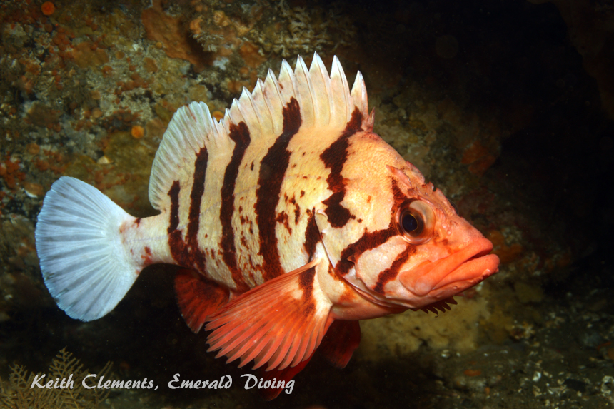</div>
<div id="wb_Text4" style="position:absolute;left:267px;top:685px;width:697px;height:14px;text-align:center;z-index:25;">
<span style="color:#FFFFFF;font-family:Arial;font-size:11px;"><em>The striking tiger rockfish. </em></span></div>
<div id="wb_Image2" style="position:absolute;left:303px;top:2785px;width:626px;height:468px;z-index:26;">
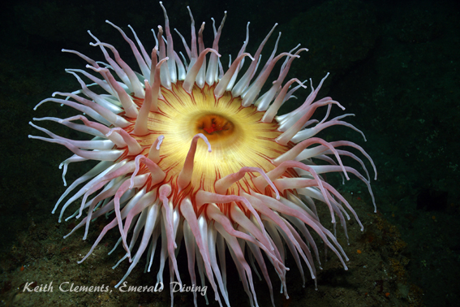</div>
<div id="wb_Text5" style="position:absolute;left:843px;top:1201px;width:169px;height:98px;z-index:27;">
<span style="color:#FFFFFF;font-family:Arial;font-size:11px;"><em>The distinguished decorated warbonnet with it's unique head-dress.&nbsp; This was the largest warbonnet I have seen outside of the Port Hardy area.&nbsp; This warbonnet was about 12&quot; in length.&nbsp; </em></span></div>
<div id="wb_Text7" style="position:absolute;left:200px;top:744px;width:814px;height:254px;text-align:justify;z-index:28;">
<span style="color:#FFFFFF;font-family:Arial;font-size:13px;">I started diving the Neah Bay area in 2002.&nbsp; My first visit to this amazing part of the world reset the bar for incredible cold water diving.&nbsp; The variety of marine species here is unbelievable, regardless if you are referring to invertebrates, fish, seaweeds, marine birds, or marine mammals.&nbsp; The underwater topography is also like no other place I have been to.&nbsp; Eye-popping dives on sea mounts, canyons, walls, ridges, and caves are all within a few miles of each other.&nbsp; The “gotcha” for Neah Bay is diving in this area is not for the timid as currents, cold, wind, swell, and fog can all be very unpredictable are rear up at a moment’s notice.<br><br>Neah Bay has called to me for the last 10 years.&nbsp; I have answered that call - sometimes twice a year - despite the considerable effort it takes to get to this remote location.&nbsp; The newness of Neah Bay diving has certainly worn off as I have racked up over 150 dives in this area.&nbsp; Instead of exciting and exhilarating exploratory dives, Neah Bay is now more about visiting old friends - schooling black rockfish at Mushroom Rock, sea lions off Tatoosh, colorful puffins out at the point, and tiger rockfish long the ridges.&nbsp; However, each year it gets harder and harder to muster the effort to venture to this area.&nbsp; Our typical hectic routine involves leaving Friday afternoon from Seattle, fighting traffic through Tacoma, and arriving in Sekiu around 10 PM.&nbsp; We get up early Saturday and Sunday, drive the 20 miles from Sekiu to Neah Bay, get in three dives each, get back to the ramp around 6 PM, then tow back to Sekiu to make dinner and get gear ready for the next day.&nbsp; On Monday, we pack up everything, race out to Neah again to get two dives in, then head back to Seattle and get home around 9 PM.&nbsp; Exhausted, I then unload and clean the boat before stuffing it back in the garage that night.&nbsp; At that point, I need a vacation.<br></span></div>
<div id="wb_Image4" style="position:absolute;left:269px;top:3274px;width:215px;height:160px;z-index:29;">
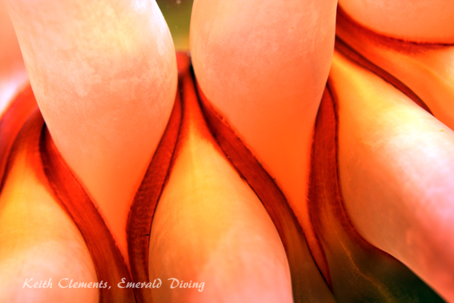</div>
<div id="wb_Text9" style="position:absolute;left:843px;top:1636px;width:159px;height:126px;z-index:30;">
<span style="color:#FFFFFF;font-family:Arial;font-size:11px;"><em>Colonies of creamy zoanthids cover large patches of the reef at Flag Pole, including several of the boulders that make up the knuckle on top of the wall.&nbsp; The anchor line for the new mooring bouy will take you right to these zoanthid encrusted boulders.</em></span></div>
<div id="wb_Image8" style="position:absolute;left:463px;top:4208px;width:502px;height:333px;z-index:31;">
</div>
<div id="wb_Image9" style="position:absolute;left:202px;top:5754px;width:406px;height:303px;z-index:32;">
</div>
<div id="wb_Text11" style="position:absolute;left:271px;top:3446px;width:685px;height:28px;text-align:center;z-index:33;">
<span style="color:#FFFFFF;font-family:Arial;font-size:11px;"><em>A portrait of one of the thousands of beautidul urticina anemones residing in the Cape Flattery area.&nbsp; This one was photographed at Mushroom Rock</em></span></div>
<div id="wb_Image12" style="position:absolute;left:462px;top:3787px;width:502px;height:375px;z-index:34;">
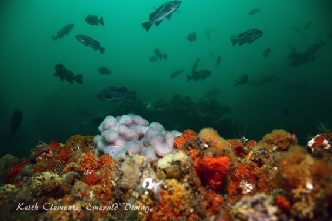</div>
<div id="wb_Image13" style="position:absolute;left:203px;top:6091px;width:406px;height:303px;z-index:35;">
</div>
<div id="wb_Image14" style="position:absolute;left:641px;top:5232px;width:380px;height:556px;z-index:36;">
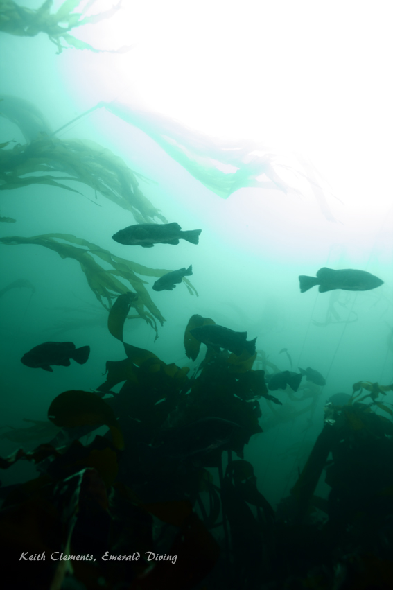</div>
<div id="wb_Image15" style="position:absolute;left:200px;top:3821px;width:271px;height:202px;z-index:37;">
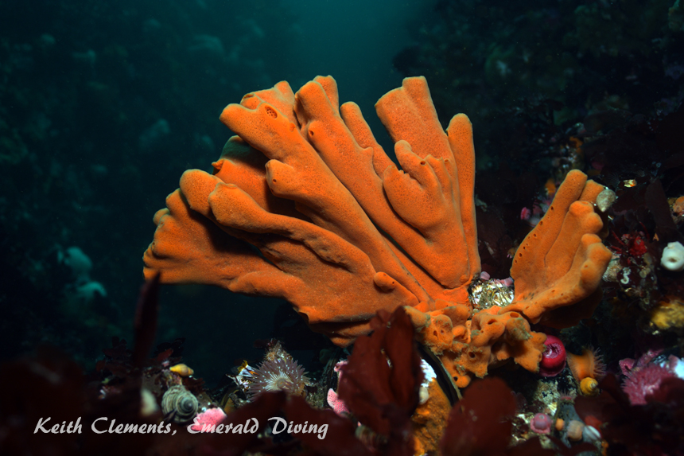</div>
<div id="wb_Image16" style="position:absolute;left:203px;top:4917px;width:624px;height:467px;z-index:38;">
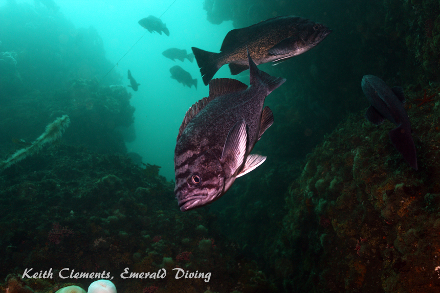</div>
<div id="wb_Image18" style="position:absolute;left:738px;top:3274px;width:215px;height:160px;z-index:39;">
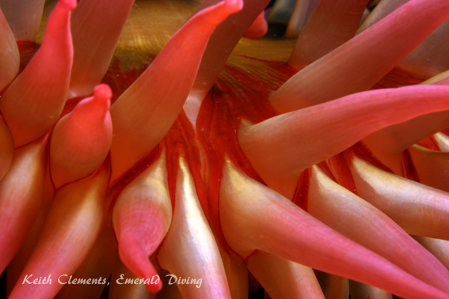</div>
<div id="wb_Image20" style="position:absolute;left:200px;top:1487px;width:619px;height:463px;z-index:40;">
</div>
<div id="wb_Image21" style="position:absolute;left:200px;top:1978px;width:619px;height:463px;z-index:41;">
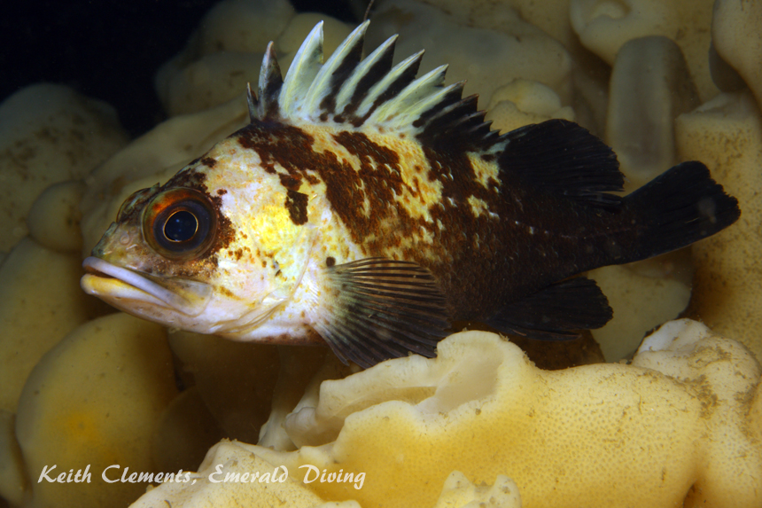</div>
<div id="wb_Image22" style="position:absolute;left:200px;top:1003px;width:619px;height:463px;z-index:42;">
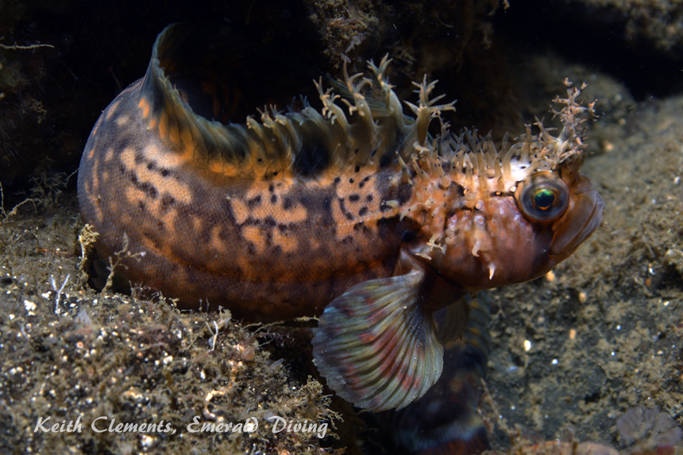</div>
<div id="wb_Text17" style="position:absolute;left:203px;top:2465px;width:820px;height:318px;text-align:justify;z-index:43;">
<span style="color:#FFFFFF;font-family:Arial;font-size:13px;">We tried something a bit different this year.&nbsp; We left for Neah on Friday morning to miss the traffic and stopped at Triton Cove on Hood Canal for a couple of dives at Flagpole (awesome site).&nbsp; We then continued on to Neah Bay that evening.&nbsp; We stopped for dinner in Port Angeles, and arrived in to Sekiu at a respectable 8 PM.&nbsp; It was an enjoyable day.&nbsp; We then did 3 dives on Saturday, but only two on Sunday and one on Monday before heading home.&nbsp; We got home around 7 PM, which made it much more bearable to clean the dive gear and boat and get everything put away.&nbsp; Everything just seemed less rushed and a lot more relaxed.&nbsp; <br><br>I was anxious to dive Hood Canal this trip as I did not make it to the canal last year.&nbsp; Our dives at Flagpole were very good.&nbsp; As a bonus, we discovered someone has installed a mooring buoy on the knuckle above the wall at Flagpole, which is sometimes a bit hard to find.&nbsp; The dive site at Flagpole consists of an offshore wall which starts in about 50 fsw and cascades down to about 90 fsw.&nbsp; Another wall then picks up a little further out and drops to about 120 fsw.&nbsp; Silt covers much of the rocky boulder piles and walls, but marine life flocks here.&nbsp; I have a complete review of this site available under “Local Dive Sites” if you are interested.<br><br>Vis was a solid 35 feet at Flagpole once we got below 40 feet.&nbsp; Wolfeels and giant Pacific octopus abounded, although none were curious enough to come out of their dens.&nbsp; I stopped counting octopus at 8 on my first dive.&nbsp; As with a typical Flagpole dive, one has to take in the boulders on the knuckle covered with a thick carpet of creamy yellow zoanthids, cloud sponges at the base of the first wall, and white sea whips.&nbsp; Healthy numbers of rockfish call this reef home, including sizable schools of yellowtail, some black, a few vermilion, and plenty of quillback and copper.&nbsp; Small lingcod, blackeye gobies, and northern ronquil are ready found amongst the boulders, although I did not note any spotfin sculpins during my two dives here which is unusual.&nbsp; The highlight was finding a large (for the area) decorated warbonnet in the open that posed for a few pics before darting off.&nbsp; The flamboyant warbonnet was about 12” long.</span><span style="color:#95B3D7;font-family:Arial;font-size:13px;"><br></span></div>
<div id="wb_Text19" style="position:absolute;left:200px;top:3493px;width:815px;height:286px;text-align:justify;z-index:44;">
<span style="color:#FFFFFF;font-family:Arial;font-size:13px;">Our first day of diving at Neah Bay found us at Cape Flattery on flat waters with little swell.&nbsp; The weather was overcast.&nbsp; As is our tradition, Jon and I started the diving activities at Mushroom Rock - always a delightful dive.&nbsp; I spent this dive exploring the boulder field and finding Puget Sound king crabs, vermilion rockfish, and playing with the schooling black rockfish in the kelp.&nbsp; By the time we surfaced, the fog had rolled in thick.&nbsp; After Margie and Kirk did a dive at Mushroom, we decided to head back to Waadah Island to see if we could get out of the fog.&nbsp; However, it only got thicker.&nbsp; Not being able to see surfacing diver really limits the dive site selection in this area as there is potential at most sites for divers to get swept away in the current.&nbsp; We then headed back out to the Cape and found Mushroom Rock still engrossed in a white blanket.&nbsp; On a whim, we headed out to Tatoosh Island.&nbsp; As we rounded the south end of the island, we unexpectedly broke out of the fog to welcoming blue skies.&nbsp; John and I ended up doing a very nice dive on the south side of Tatoosh Island in Tatoosh Canyon.&nbsp; I find the invertebrate life in this canyon incredible - both in terms of diversity and robustness.&nbsp; As there was no current during this dive, the blue, black, and yellowtail rockfish were schooling in mass mid-water.&nbsp; Simply delightful.<br><br>We then headed out to Duncan rock where Margie and Kirk had an incredible dive on the west side of Duncan Rock - a location we do not get to dive very often.&nbsp; As Margie and Kirk surfaced with wide-eyes and thumbs in the air, Jon and I quickly jumped in as soon as they got in the boat since the current had not yet changed direction.&nbsp; We descended the canyon on the west side down to about 100 feet and explored the rocky channel carpeted with lush oversized invertebrates that were obviously well feed in the cold, nutrient rich, and pristine waters.&nbsp; Vis was outstanding during this dive - in excess of 45 feet at depth.&nbsp; I noted the swell had picked up significantly as I made my safety stop next to Duncan Rock.&nbsp; Upon getting back to Sekiu that evening, Jon spoiled us with some incredibly tender and delicious home- smoked ribs.<br></span></div>
<div id="wb_Text20" style="position:absolute;left:200px;top:4028px;width:268px;height:14px;z-index:45;">
<span style="color:#FFFFFF;font-family:Arial;font-size:11px;"><em>Orange Finger Sponge, Duncan Rock</em></span></div>
<div id="wb_Text22" style="position:absolute;left:200px;top:4578px;width:822px;height:316px;text-align:justify;z-index:46;">
<span style="color:#FFFFFF;font-family:Arial;font-size:13px;">The next day we just did two dives each.&nbsp; Margie, Kirk, and I jumped in at Mushroom Rock again, but we started further to the west this time and explored some of the rock faces and canyons.&nbsp; I was rewarded with finding a basket star and a field of about 15 red gorgonians.&nbsp; Jon opted to do a snorkel out at Tatoosh in hopes of getting some kelp pics - and maybe even a rare interaction with the resident sea otters.&nbsp; The kelp was willing, but the sea otters were not.&nbsp; For a second dive, Margie and Kirk wanted to do Duncan again.&nbsp; As the current was coming from the&nbsp; west this time, we put them on the east side.&nbsp; They had a good dive, but things got a bit squirrely when about half a dozen big male stellar sea lions hunting in the area made it clear to Kirk that they did not want him around.&nbsp; Several of the sea lions were nibbling at Margie tank hoses and fins (which is normal behavior ), but one sea lion came right up to Kirk’s face with it’s mount wide open and got in his face - a clear indication that the sea lion was irritated at Kirk’s presence.&nbsp; Kirk and Margie smartly headed for deeper water away from where the sea lions were feeding.&nbsp; <br><br>After hearing about Kirks harrowing experience, I decided to tempt fate and do a dive off Stellar Rock where the sea lions often join us while diving.&nbsp; I reasoned that the sea lions were offensive to Margie and Kirk as they were hunting, so Id be OK elsewhere.&nbsp; I was right - I had about 6 fly-bys by big males during the dive, but none got closer than 10 feet away.&nbsp; Im always amazed how many rockfish and greenling abound at Stellar Rock - even with a large colony of sea lions nearby.&nbsp; <br><br>We then spent some time snorkeling around the caves on the west side of Tatoosh, which is always fun.&nbsp; We have found elephant seals here in the past, but not today.&nbsp; We intended to do a dive at Third Beach to end the diving day, but the kelp never surfaced and the wind was blowing strong around Neah.&nbsp; We decided to punt on the dive and head back for some of Jon’s delicious stir-fry.</span><span style="color:#95B3D7;font-family:Arial;font-size:13px;"><br></span><span style="color:#000000;font-family:Arial;font-size:11px;"><br></span></div>
<div id="wb_Text26" style="position:absolute;left:661px;top:5794px;width:358px;height:14px;text-align:center;z-index:47;">
<span style="color:#FFFFFF;font-family:Arial;font-size:11px;"><em>Black rockfish in the kelp at Mushroom Rock</em></span></div>
<div id="wb_Text27" style="position:absolute;left:203px;top:5390px;width:573px;height:14px;z-index:48;">
<span style="color:#FFFFFF;font-family:Arial;font-size:11px;"><em>Blue rockfish, south side of Tatoosh Island.</em></span></div>
<div id="wb_Text28" style="position:absolute;left:206px;top:6401px;width:407px;height:14px;text-align:center;z-index:49;">
<span style="color:#FFFFFF;font-family:Arial;font-size:11px;"><em>A field of Red gorgonian corals at Mushroom Rock.</em></span></div>
<div id="wb_Text29" style="position:absolute;left:214px;top:4830px;width:573px;height:14px;text-align:justify;z-index:50;">
&nbsp;</div>
<div id="wb_Text31" style="position:absolute;left:636px;top:5833px;width:381px;height:350px;text-align:justify;z-index:51;">
<span style="color:#FFFFFF;font-family:Arial;font-size:13px;">The next morning, Jon and I were on our own as Kirk and Margie had to leave early to make another obligation.&nbsp; We intended on diving Third Beach Pinnacle, one of my favorite dives in the area.&nbsp; This was our third attempt to dive this site, but the kelp never surfaced again.&nbsp; I believe the flooding tide was so weak this weekend that the current never switched from the ebb over this ridge.&nbsp; Since the kelp never showed, I opted for a dive at Tiger Ridge off Waadah Island.&nbsp; This is usually a great drift dive, but I found very little current on the ridge so did a down-and-back.&nbsp; I was delighted to find a wolfeel and over half a dozen magnificent tiger rockfish on this dive, in addition to a band of inquisitive canary rockfish, juvenile yelloweye, schooling blue, black, and yellowtail, and guarded copper, quillback, and China rockfish.&nbsp; Although the ridge at this site is not as prominent as Third Beach, it is nonetheless a great dive and a wonderful way to end the trip.&nbsp; Jon was to finish diving at Waadah Island, but realized his rebreather was low on O2, so we called it a day.<br><br>I much preferred the more relaxed itinerary of this trip over trips past.&nbsp; Good company, great food, and wonderful diving.&nbsp; I even got to see a few old friends.&nbsp; <br></span></div>
<div id="wb_Text33" style="position:absolute;left:201px;top:6062px;width:411px;height:14px;text-align:center;z-index:52;">
<span style="color:#FFFFFF;font-family:Arial;font-size:11px;"><em>Bull kelp tat Mushroom Rock at shallow depth.</em></span></div>
<div id="wb_Text2" style="position:absolute;left:843px;top:2120px;width:159px;height:168px;z-index:53;">
<span style="color:#FFFFFF;font-family:Arial;font-size:11px;"><em>A few cloud sponges in mediocre health are located at the base of the first wall at FlagPole.&nbsp; These sponges serve as a favorite resting or higing place for many creatures, including squal lobsters, copper rockfish, and various hermit crabs.&nbsp; A quillback rockfish is pictured here resting on the cloud sponge. </em></span></div>
<div id="wb_Image6" style="position:absolute;left:200px;top:4075px;width:271px;height:202px;z-index:54;">
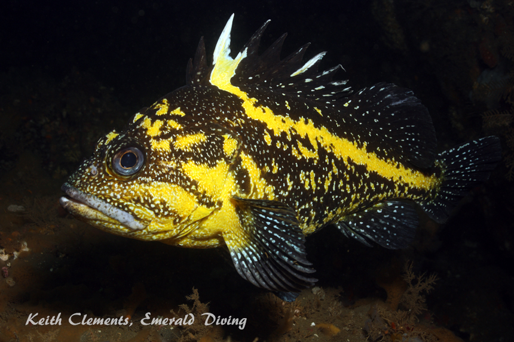</div>
<div id="wb_Image7" style="position:absolute;left:201px;top:4331px;width:271px;height:202px;z-index:55;">
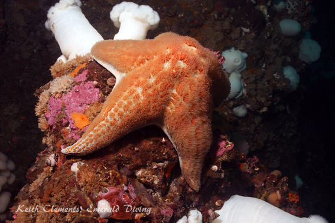</div>
<div id="wb_Text8" style="position:absolute;left:200px;top:4287px;width:210px;height:14px;z-index:56;">
<span style="color:#FFFFFF;font-family:Arial;font-size:11px;"><em>China Rockfish, Tatoosh Island</em></span></div>
<div id="wb_Text10" style="position:absolute;left:201px;top:4539px;width:268px;height:14px;z-index:57;">
<span style="color:#FFFFFF;font-family:Arial;font-size:11px;"><em>Leather Start, Mushroom Rock</em></span></div>
<div id="wb_Text12" style="position:absolute;left:504px;top:4168px;width:420px;height:14px;text-align:center;z-index:58;">
<span style="color:#FFFFFF;font-family:Arial;font-size:11px;"><em>Black rockfish school on the south side of Tatoosh Island</em></span></div>
<div id="wb_Text13" style="position:absolute;left:519px;top:4548px;width:420px;height:14px;text-align:center;z-index:59;">
<span style="color:#FFFFFF;font-family:Arial;font-size:11px;"><em>Female kelp greenling, north side of Tatoosh Island</em></span></div>
<div id="wb_Text14" style="position:absolute;left:196px;top:4970px;width:186px;height:2px;z-index:60;">
&nbsp;</div>
<div id="wb_Image17" style="position:absolute;left:504px;top:3274px;width:215px;height:160px;z-index:61;">
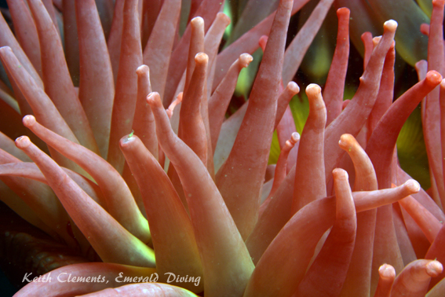</div>
<div id="wb_Image3" style="position:absolute;left:202px;top:5418px;width:407px;height:304px;z-index:62;">
</div>
<div id="wb_Text6" style="position:absolute;left:201px;top:5729px;width:411px;height:14px;text-align:center;z-index:63;">
<span style="color:#FFFFFF;font-family:Arial;font-size:11px;"><em>White lined dirona makes its way across pink hydrocoral.</em></span></div>
</div>
</body>
</html>